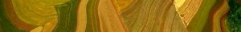

Ecología de Regiones y Paisajes
2024-08-14
CONTENIDO

1) Ecología de Regiones y Paisajes (Correlativa: Ecología General)
(curso de grado, plan 1984 & 2019: Ex Ecología Regional y Ecología de Paisajes y Regiones)
2) Fundamentos de la Ecología de Paisajes y Regiones
(curso de posgrado 160hs, 5 puntos, Res. CD N° 1977/21)
3) Sistemas de Información Geográficos y Teledetección: Principios y aplicaciones para la incorporación de la información espacial a los modelos en ecología
(curso de posgrado 88hs, 4 puntos).
Los primeros dos cursos comparten su programa y cronograma, mientras que el tercer curso corresponde a la segunda parte de los primeros por lo que tiene un cronograma distinto. CRONOGRAMAS TENTATIVOS 2024